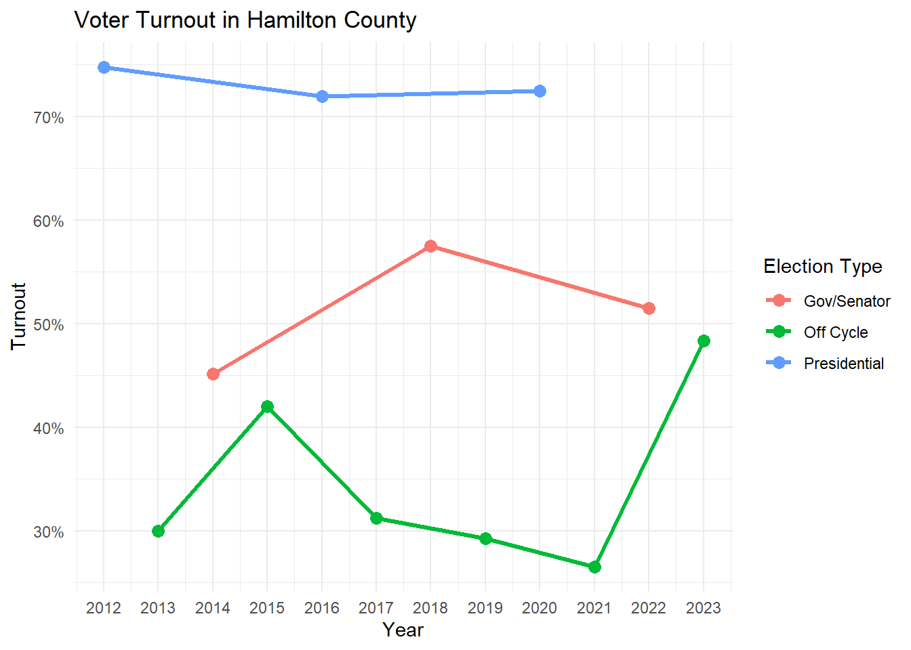
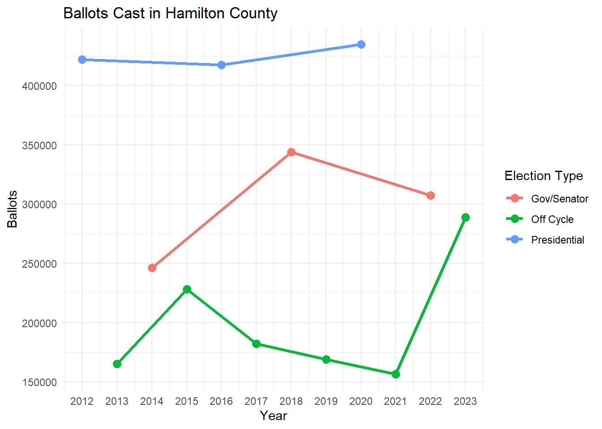
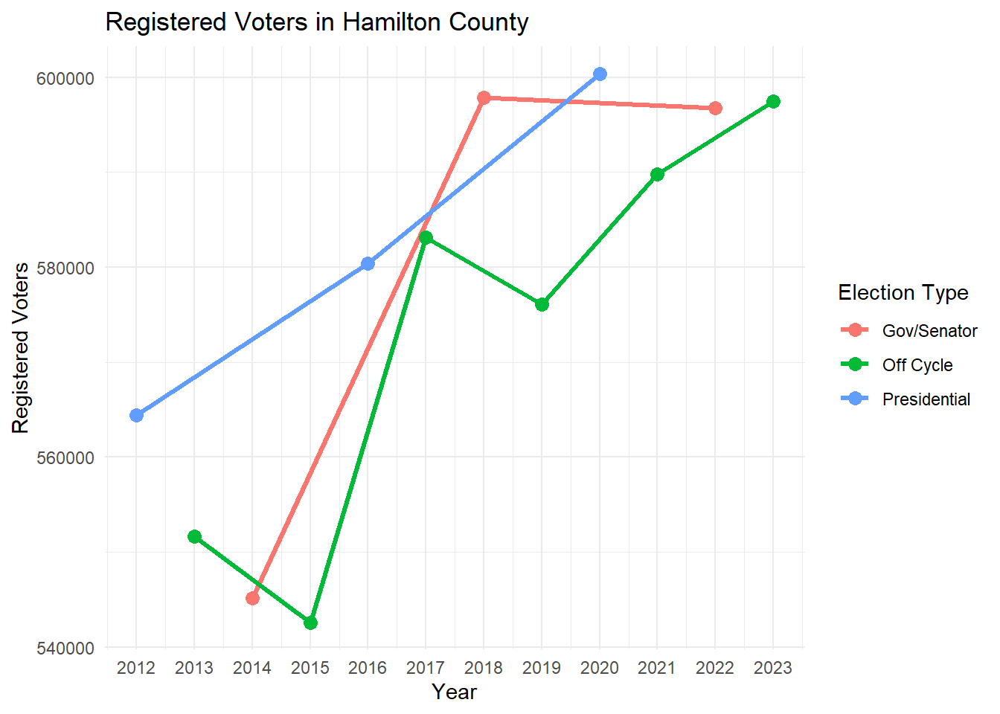
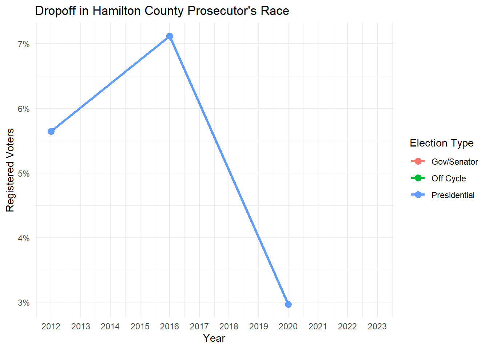
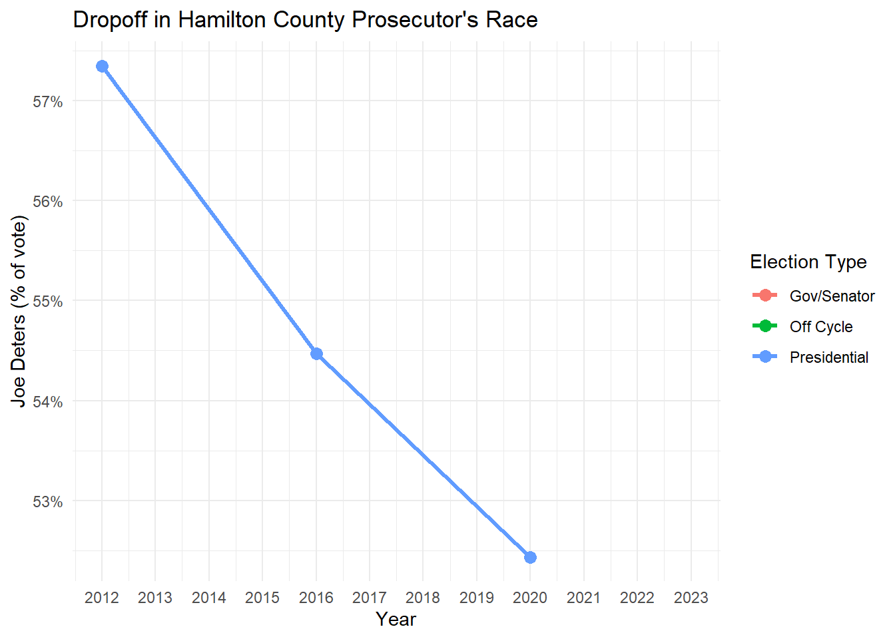

knitr::opts_chunk$set(
echo = TRUE,
message = FALSE,
warning = FALSE
)
library(tidyverse)
library(sf)
library(readxl)
library(RColorBrewer)
library(tidycensus)DSCI 210: Magic number, turnout, dropoff, base, swing
Loading necessary packages and such.
Campaign Terminology
Turnout
As we have seen in the list of registered voters, Hamilton County has approximately 600,000 registered voters. In any given election however, not all registered voters will vote. In years with Presidential elections, voter turnout is highest. In the even years between where Governors and Senators are on the ballot (~73% in 2020 and 72% in 2016), turnout is next highest (~51% in 2022). In odd years (often referred to as “off-cycle” elections), turnout is lower (~48% in 2023 and 21% in 2021). Turnout is lowest for primary elections and “special elections” held in spring.
turnout <- read_excel("../data/Turnout 2012-2023.xlsx")
# Create the plot
turnout %>%
ggplot(aes(x = Year, y = Turnout, color = Type)) +
geom_line(size = 1.2) + # Line plot with thicker lines
geom_point(size = 3) + # Add points to the plot
labs(
title = "Voter Turnout in Hamilton County",
x = "Year",
y = "Turnout",
color = "Election Type"
) +
theme_minimal() + # A clean theme
scale_y_continuous(labels = scales::percent_format()) + # Turnout as percentage
scale_x_continuous(breaks = seq(2012, 2023, by = 1)) # Year ticks
turnout %>%
ggplot( aes(x = Year, y = Ballots, color = Type)) +
geom_line(size = 1.2) + # Line plot with thicker lines
geom_point(size = 3) + # Add points to the plot
labs(
title = "Ballots Cast in Hamilton County",
x = "Year",
y = "Ballots",
color = "Election Type"
) +
theme_minimal() + # A clean theme
scale_x_continuous(breaks = seq(2012, 2023, by = 1)) # Year ticks
turnout %>%
ggplot( aes(x = Year, y = `Registered Voters`, color = Type)) +
geom_line(size = 1.2) + # Line plot with thicker lines
geom_point(size = 3) + # Add points to the plot
labs(
title = "Registered Voters in Hamilton County",
x = "Year",
y = "Registered Voters",
color = "Election Type"
) +
theme_minimal() + # A clean theme
scale_x_continuous(breaks = seq(2012, 2023, by = 1)) # Year ticks
Magic Number
Magic number is pretty simple. It is the number of votes that a candidate will need to win an election. For example, if 800 people vote in a simple head-to-head race, the magic number is 401. In general, for head-to-head races the magic number is given by a rule of “50% + 1 votes.”
In field races where more than two candidates are on the ballot and voters can possibly vote for more than one candidate, the magic number is not straightforward. This requires more detailed assumptions and calculations. For example, let’s assume 800 people vote for up to two candidates, let’s assume the top candidate gets 502 votes, the next candidate gets 387 votes, the next gets 321, the next gets 301, and so on. The magic number in this case would be 322 votes because that is the number of votes needed to finish in second or higher (i.e. ahead of third place).
Dropoff
Dropoff is an important consideration for races that are further down the ballot and particularly for races that are nonpartisan. While more than 70% of registered voters may go to the polls in a year with a Presidential race, not all of them will vote in every race on the ballot. The ballot is long and they may get bored. In addition, some races further down the ballot are non-partisan (don’t have Rep/Dem affiliations on ballot) and some voter won’t be informed enough to know who they prefer to vote for. So if 800 vote in an election, but only 720 actually vote in your candidate’s race (e.g.~Court of Common Please), the dropoff was 80/800 = 10%.
turnout <- read_excel("../data/Turnout 2012-2023.xlsx")
turnout %>%
ggplot( aes(x = Year, y = `Prosecutor Dropoff`, color = Type)) +
geom_line(size = 1.2) + # Line plot with thicker lines
geom_point(size = 3) + # Add points to the plot
labs(
title = "Dropoff in Hamilton County Prosecutor's Race",
x = "Year",
y = "Registered Voters",
color = "Election Type"
) +
theme_minimal() + # A clean theme
scale_y_continuous(labels = scales::percent_format()) + # Turnout as percentage
scale_x_continuous(breaks = seq(2012, 2023, by = 1)) # Year ticks
turnout %>%
ggplot( aes(x = Year, y = `Deters Proportion`, color = Type)) +
geom_line(size = 1.2) + # Line plot with thicker lines
geom_point(size = 3) + # Add points to the plot
labs(
title = "Dropoff in Hamilton County Prosecutor's Race",
x = "Year",
y = "Joe Deters (% of vote)",
color = "Election Type"
) +
theme_minimal() + # A clean theme
scale_y_continuous(labels = scales::percent_format()) + # Turnout as percentage
scale_x_continuous(breaks = seq(2012, 2023, by = 1)) # Year ticks
Base/Swing Districts
We already talked about Base/Swing districts when making maps of election results.
- Base: a district where our candidate is expected to receive strong support
- Swing: a district where voters are fairly evenly divided. In other words, our candidate can receive significant support here with the proper messaging
- Residual: a district where voters are not expected to support our candidate strongly
When coloring maps, it made the most sense to think of voting precincts as our “districts,” and this may be how your campaign thinks of the election too. On the other hand, it may make sense for you choose to think of a collection of precincts as a base/swing district for you (e.g. all of Oakley, or all of Montgomery).
Base/Swing Voters
If I’m being 100% honest, I don’t know if our PPP peers distinguish very clearly between base voters and precincts. In my mind, they are two very different things.
- Base voter: a person who is very likely to vote for your candidate
- Swing/undecided voter: a person who may vote for either candidate, perhaps depending on persuasion.
- Residual: a person who is unlikely to vote for your candidate
In my mind, a base voter can live anywhere in Hamilton County, even in the strongest base district of your opponent.
Data Science
We have somewhat arrived at the point where it’s time to do real Data Science. We have access to
- election results data
- list of registered voters and what elections they’ve voted in
- know how to link data to maps for visualization
- know how manipulate and make other visualizations of data (i.e. summer project stuff)
It’s time to blend our data skills with domain knowledge (including our knowledge of campaign stuff and the expertise of our PPP peers and/or campaign managers) to “draw insights,” “make predictions,” and “inform decision-making.”